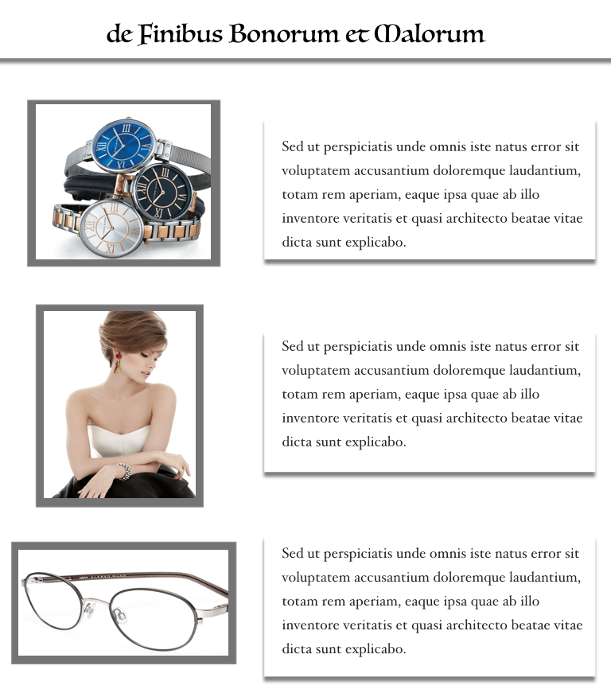
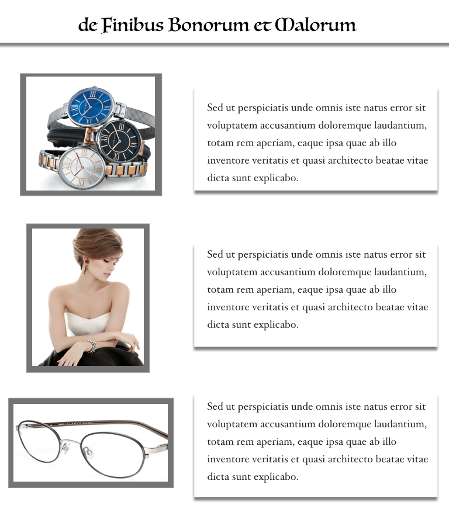

Alfred Sung Shopping Site - REDESIGN
Introduction
A few days ago, I was shopping online and happened to view the AlfredSung.com site. At first, it seemed normal like any other site but then I felt lost. The reason is for the first 3-4 seconds nothing came up on the screen. And, no, I don’t mean the site was loading libraries or downloading huge images, I mean that there was NO MENU BAR. I could not move ahead. The first few sections when the site needs to impress the user were lost. After the menu finally showed up I had to drill down deep in the menu (maybe 4-5 or even 6) clicks. Time consuming! When I finally got to what I was looking for, there was just an image and 1-line text about Alfred Sung. A shop online somewhere hidden at the bottom.
Understanding the challenge
The annoyance is that if I need to go some other place to shop online then where was I right now? I came up with some set of changes that could make the site more functional, useful and usable.
Here is a summary:
- There is no clarity on what the website is about or why someone would want to use it.
- Who is Alfred Sung? A person/ thing/ brand/ 2 people?
- It looks great but what am I expecting from the site?
- Fine, I colcked it, now what? I don’t see any menu (~3-4 secs). Just some random image.
- User’s first reaction is ‘ahh, let’s get out of here’.
- Let’s suppose with all the patience in the universe the user waited on the menu to appear, the options are very vague.
- Products, About, Contact, Announcements.
- The user still does not know what’s happening unless he is Alfred Sung.
- User clicks ‘products’ out of curiosity.
Click to view the entire list of challenges.
Research
Research about Alfred Sung.
I also did some personal research to get an insight into what the brand is all about and a little of its history and owner.
As seen, Alfred Sung is a Canadian-Chinese fashion designer and since there is a hint of China there I best thought to design a logo close to heart.
Inspiration for my logo.
My logo contains English letters but also has his initials in Chinese script thus connecting with a larger audience and keeping traditional aspect.
I did some research into what a user would expect from a website in general.
My findings are:
- Why users chose you? What’s so unique about the business.
- What does the company offer? Is it buying, selling, just displaying?
- What is the customer support line or number? What is your number? Where are you located?
- Contact details are a must to create a trust emotion with the user.
- Some validations from 3rd party users, recommendations, reviews etc.
- Security of information, credit cards, address etc.
- Room for feedback.
- Clear functionality and call to action.
- Offers, promotions, discounts, login, signups etc.
- Logo / Branding of the company.
- If it is an ecommerce site then more details on shipping and customer support
Users answer to "why they shop online?"
- What motivates you to shop online?
- Easier search.
- No need to get into big crowds in malls and shops.
- Easy at home shipping and delivery.
- Easy returns.
- No need to get extra time out, out of busy schedules to shop. Specially at the last moment.
- Sending gifts or things to loved ones far away.
Users answer to "Online shopping concerns."
- What are the biggest challenges or stress factors when shopping online?
- Security features like giving out credit card information and addresses.
- Site navigation is difficult sometimes with too many options or too few options. Sometimes the buttons are hidden or difficult to find.
- Shipping confirmation i.e. legitimacy of the site and whether the product will really be delivered or not.
- Easy returns.
- Customer support information is missing and there is no help when needed.
- When the brand is not popular and the site or the products have no reviews.
Persona
After understanding the user requirements and challenges they face I created a persona that had some common traits of all users. Focusing on her needs and helped me create a straight layout and avoided distractions of more ideas or features that may not be the need of the hour.
User Journey
Keeping the user persona in mind I created a user journey indicating the obstacles the user might encounter while using the website. It shows what the user thinks, does, his/her thoughts and feels at every point.
Flowchart
User journey outline on a broader perspective.

Sketches & Wireframes
I roughly created some sketches to lay the design on paper and visually confirm that the picture I have in mind is as required. I drew these on paper first and later used mock plus to create the wireframes.
The below visuals represent the skeletal framework of the site. This process helped me lay the images, logo, text, headers, captions etc. in the right order and helped me identify and fix any visible functional issues that may hamper the user journey. I also decided on a few font styles that could be used and their sizes based on the area I had for texts and headings.
Storyboard
I created a storyboard more like a narrative experience showing the overall usage of the app in a broad context.

Final Evaluation and Conclusion
 
